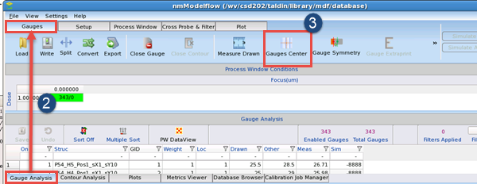
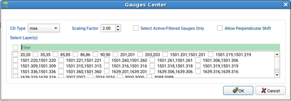

Calibre nmModelflow has the capability
to recenter gauges that may not be aligned well with the geometry
of the associated target layer.
Procedure
- If the
gauge set is not already active:
- Switch
to the Database Browser tab.
- Select
the Gauges group from the database list on the left.
- Select
the desired gauge from the list of gauges.
- Click Activate.
- Switch
to the Gauge Analysis tab, and switch the
top tab to Gauges mode.

- Click Gauges
Center.
- In the
Gauges Center dialog, select options as needed:

CD Type —
Sets the criteria for the centering point of the gauges.
Drawn —
Use the Drawn column as the centering point.
Meas —
Use the resist measurement column as the centering point.
Meas_Etch —
Use the etch measurement column as the centering point.
Max —
Use the highest value of the Drawn, Meas, or Meas_Etch columns as
the centering point.
Scaling Factor —
Specifies the scaling factor for the gauge. The default is 2x the current
size, and this value must be at least 1.0. A value of 1.0 indicates
that the gauges are centered, but not resized.
Select Active/Filtered Gauges Only —
Sets the centering to be done on only active gauges.
Allow Perpendicular Shift —
Allows shifting to be performed in the perpendicular direction.
This operation only shifts the gauge if the gauge crosses two edges
of interest that form a rectangle with the gauge.
Select Layers —
Optionally specifies layers to search for centering geometries on.
Click OK to continue.
Results
The gauge location (X1, X2, Y1, Y2 columns) is adjusted to center
the gauge with the new scaling factor. All gauges (both enabled
and disabled) are adjusted.
Note: If the resulting gauges appear uncentered and your design
contains SRAFs, you will need to adjust the SRAF tolerance using
the “mdf gauges sraftolerance” command.
- The default value is the measured CD divided
by 3, but no greater than 40nm.
- Specify a new value based on the line width of your
SRAFs compared against the measured CD.
- After running the command, you will need to reload
the gauge file again (because midpoint coordinates are stored when
loading gauges, not when centering) before trying to recenter the
gauges.